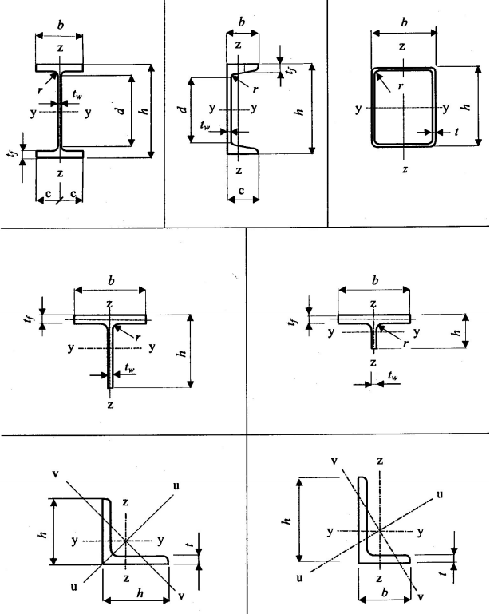
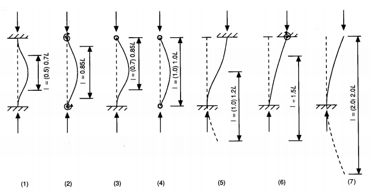

Šķērsgriezumu un elementu aprēķins (ULS)
Tērauda elementu nestspējas un stabilitātes pārbaudes tiek veiktas saskaņā ar LVS EN 1993-1-1.
Materiāla parciālie drošības koeficienti (\(\gamma_M\))
Aprēķinot elementu un savienojumu pretestību nestspējas robežstāvoklī (ULS), tērauda stiprību dala ar materiāla parciālajiem koeficientiem \(\gamma_M\).
Latvijā piemērojamie koeficienti saskaņā ar LVS EN 1993-1-1/NA:
| Elementi / Pārbaudes | Pretestības raksturojums | Drošības koeficients \(\gamma_M\) |
|---|---|---|
| Elementu un šķērsgriezumu pretestība: | ||
| — Šķērsgriezuma nestspēja (visām klasēm) | Pretestība šķērsgriezuma plastiskai plūstamībai, ieskaitot sāniskās vērpes klupšanu | \(\gamma_{M0} = 1.00\) |
| — Elementu stabilitāte (noturības pārbaudes) | Stieņu pretestība izlieces un vērpes klupšanai stieņu pārbaudēs | \(\gamma_{M1} = 1.00\) * |
| — Stieptu šķērsgriezumu sabrukums | Pretestība trauslam sabrukumam stieptos šķēlumos pie skrūvju caurumiem | \(\gamma_{M2} = 1.25\) |
| Savienojumu pretestība: | ||
| — Skrūvju un metinātie savienojumi | Pretestība skrūvēm, kniedēm, tapām un metinātajām šuvēm | \(\gamma_{M2} = 1.25\) |
| — Virsmu berzes pretestība (berzes šuvēm) | Pretestība slīdei (normāliem skrūvju caurumiem): — nestspējas robežstāvoklī (ULS) — lietojamības robežstāvoklī (SLS) | \(\gamma_{M3} = 1.25\) \(\gamma_{M3,ser} = 1.10\) |
| — Injekcijas skrūvju savienojumi | Pretestība injekcijas skrūvēm | \(\gamma_{M4} = 1.10\) |
| — Slēgto profilu (cauruļprofilu) savienojumi | Režģoto kopņu mezglu nestspēja | \(\gamma_{M5} = 1.10\) |
| — Kniedētie savienojumi | Kniedēto savienojumu pārbaude SLS | \(\gamma_{M6,ser} = 1.00\) |
| — Augstas stiprības skrūvju iepriekšējais saspriegums | Skrūvju spriegošanas spēka pārbaude | \(\gamma_{M7} = 1.10\) |
*Svarīga piezīme: LVS EN 1993-1-1/NA nosaka stabilitātes koeficientu \(\gamma_{M1} = 1.00\) (Eirokodeksa pamatdokumentā rekomendētā vērtība ir \(1.10\)). Tas nodrošina ekonomiskāku tērauda elementu stabilitātes aprēķinu Latvijas teritorijā.
Elementu asu izkārtojums un aprēķina garumi
Tērauda elementu šķērsgriezuma koordinātu asis tiek definētas šādi:
- X-X: Elementa garenass;
- Y-Y: Stiprā ass (liece pret šo asi rada lieces momentu \(M_y\), kur šķērsgriezuma elastības pretestības modulis \(W_y\) ir maksimālais);
- Z-Z: Vājā ass (pretestības modulis \(W_z\) ir minimālais).
| Koordinātu asu izvietojums | Aprēķina garumi \(L_{\text{cr}}\) tipiskām atbalsta situācijām |
|---|---|
 |  |
Provizoriskās laidumu un augstumu attiecības (\(L/d\))
Konstruēšanas sākumposmā elementu šķērsgriezuma augstumu (dziļumu) \(d\) var provizoriski noteikt pēc laiduma un augstuma attiecības \(L/d\):
| Elements | Attiecība \(L/d\) | Provizoriskais augstums \(d\) (mm) atkarībā no laiduma (\(L\), m) | |||||||||
|---|---|---|---|---|---|---|---|---|---|---|---|
| 3 m | 4.5 m | 6 m | 7.5 m | 9 m | 12 m | 15 m | 23 m | 30 m | 45-90 m | ||
| Sija (vispārīga) | 20 | 230 | 300 | 390 | 460 | 610 | 770 | 1150 | — | — | — |
| Kompozītā sija | 28 | 200 | 220 | 270 | 320 | 440 | 550 | 820 | — | — | — |
| Rāmja sija (stinga) | 10 | 460 | 610 | 760 | 900 | 1100 | 1500 | 2300 | — | — | — |
| Grīdas sek. sijas | 20 | 150 | 230 | 300 | 400 | 450 | 600 | 750 | — | — | — |
| Jumta sek. sijas | 24 | — | — | — | — | — | 640 | 800 | 950 | 1250 | — |
| Metināta sija | 15 | — | 400 | 500 | 600 | 800 | 1000 | 1500 | 2000 | — | — |
| Kopne | 12 | — | 500 | 640 | 760 | 1000 | 1300 | 1900 | 2500 | 3000 | 5000-7000 |
| Telpisks režģis | 16 | — | — | — | 570 | 760 | 950 | 1400 | 1900 | 2860 | 3800-5700 |
Piezīme: Šī tabula paredzēta tikai provizoriskam izmēru novērtējumam. Galīgais šķērsgriezums vienmēr jānosaka ar stiprības, stabilitātes un izlieces aprēķiniem.
Paralēlo joslu kopņu projektēšanas nosacījumi
Saskaņā ar cauruļveida profilu (RHS) kopņu projektēšanas rokasgrāmatām, optimālā laiduma un augstuma attiecība paralēlo joslu kopnēm ir robežās no \(10\) līdz \(15\) (optimāli tuvu \(15\)).
Kopņu pašsvarā lielāko daļu sastāda joslas (ap 50% spiestā josla, 30% stieptā josla), bet režģa elementi (atgāžņi un statņi) sastāda tikai ap 20%. Tādēļ kopņu projektēšanā jāievēro šāda labā prakse:
- izvēlēties konstantu režģa paneļu platumu visā kopnes garumā, lai standartizētu mezglus;
- paredzēt pāra skaitu režģa elementu (atgāžņu);
- noslogotākos režģa elementus (it īpaši pie balstiem) orientēt tā, lai tie darbotos stiepē (stiepti stieņi nav pakļauti klupšanai, kas ļauj izmantot mazākus šķērsgriezumus);
- atgāžņu slīpuma leņķi pret joslām veidot robežās no \(35^\circ\) līdz \(50^\circ\);
- sekundārās slodzes (kopturus) izvietot tieši kopnes mezglos, lai novērstu joslu lokālo lieci.
Kopņu laiduma pret augstumu (\(L/D\)) attiecības:
| Konstrukciju veids | Attiecība \(L/D\) | Piezīmes |
|---|---|---|
| Velmētie tērauda profili (sijas) | \(< 20\) | Lieces un izlieces kritēriji. |
| Vienlaiduma kopnes: — smagai slodzei — vidējai slodzei — vieglai slodzei (jumti) | \(12 \dots 15\) \(15 \dots 18\) \(18 \dots 21\) | Var izmantot lielākas attiecības robežas, ja mezglos tiek nodrošināti stingri (momentizturīgi) savienojumi. |
| Telpiskie režģi un plātnes | \(15 \dots 45\) | Balstās uz skrūvējamiem un metinātiem mezgliem. |
Kopnes augstuma \(D\) orientējošā josla atkarībā no laiduma \(l\): augšējā robeža — lielai slodzei uz laiduma vienību (\(w^\ast/l\)), apakšējā — mazai. Josla atbilst aptuveni \(l/D \approx 8 \dots 12\).